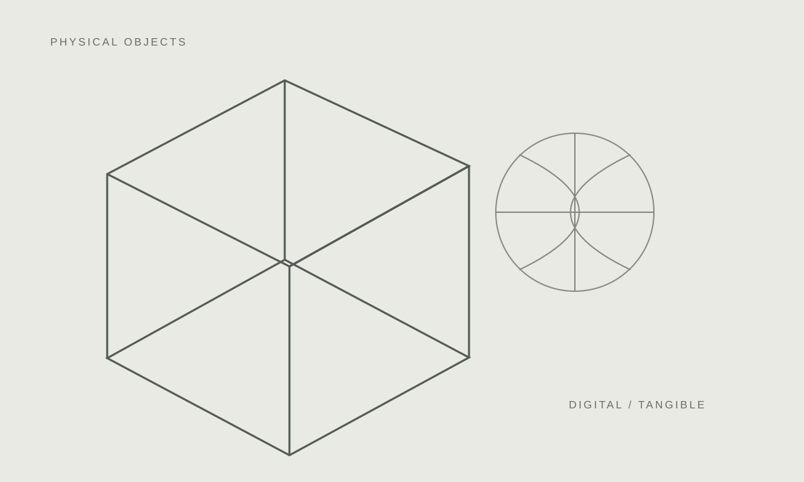

Selected work
Research
Learning through observation, making and comparison.
 ResearchLearning through touchEmbodied and tangible learning, in collaboration with Björn Hedin.
ResearchLearning through touchEmbodied and tangible learning, in collaboration with Björn Hedin. Japan · 2026Learning through contrastClassroom observation and STEM learning in Japan and Sweden.
Japan · 2026Learning through contrastClassroom observation and STEM learning in Japan and Sweden.
Learning materialsObjects for thinkingModels that make abstract ideas tangible.Selected collaborations
2026 / International STEAM Collaboration
Institute of Science Tokyo × Vetenskapens Hus, KTH / Stockholm University
Collaborative development of student-led STEAM workshops in Japan and Sweden, connecting university and upper-secondary students through practical science activities and international exchange.
Role: Workshop development, educational collaboration and coordination of the Swedish programme.